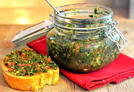

Pebre Salsa

Description
Pebre Salsa is a chilean fresh sauce that is served as a compliment to many dishes. It is a traditional and very old recipe that comes in many different versions and each family has their own twist on their Pebre Salsa.
Ingredients
- 6 Tomatoes
- 2 Shalott Onions
- 1 Bunch Coriander
- 2 Tbsp Garlic Powder
- 4 Tbsp Red Wine Vinegar
- 3 Tbsp Sriracha Sauce
- 1 Tbsp Olive Oil
Instructions
- Finely chop the tomatoes, onion and coriander.
- Combine all ingredients in a bowl.
- Add more vinegar or sriracha sauce where needed.
- Refrigirate for at least 2 hours to let the flavours blend and mature.